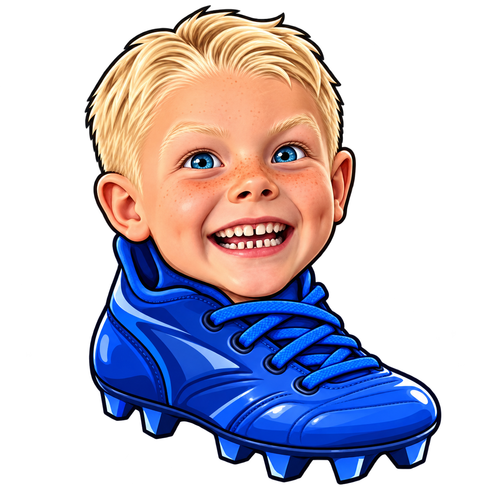
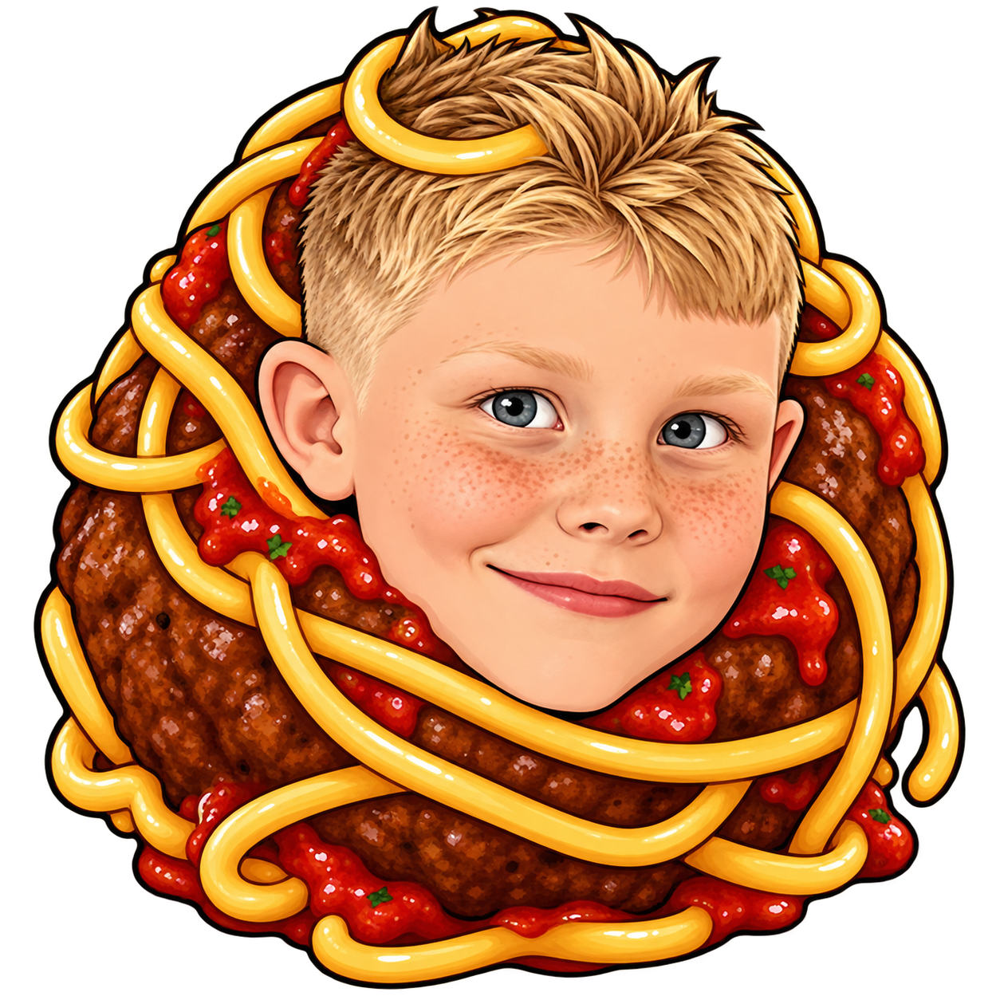
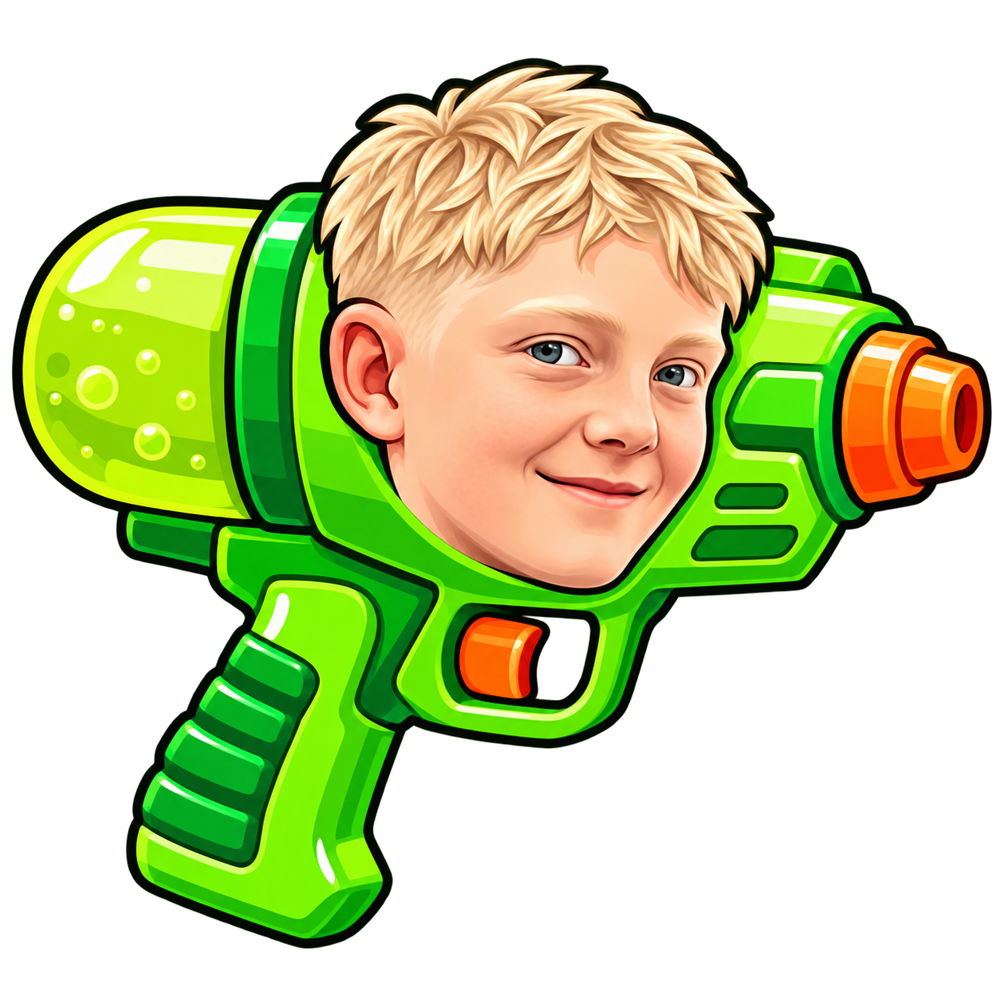
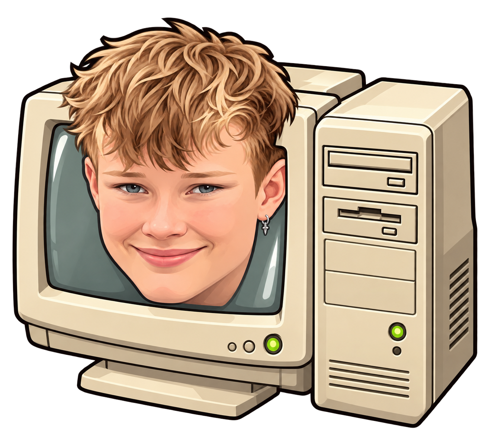
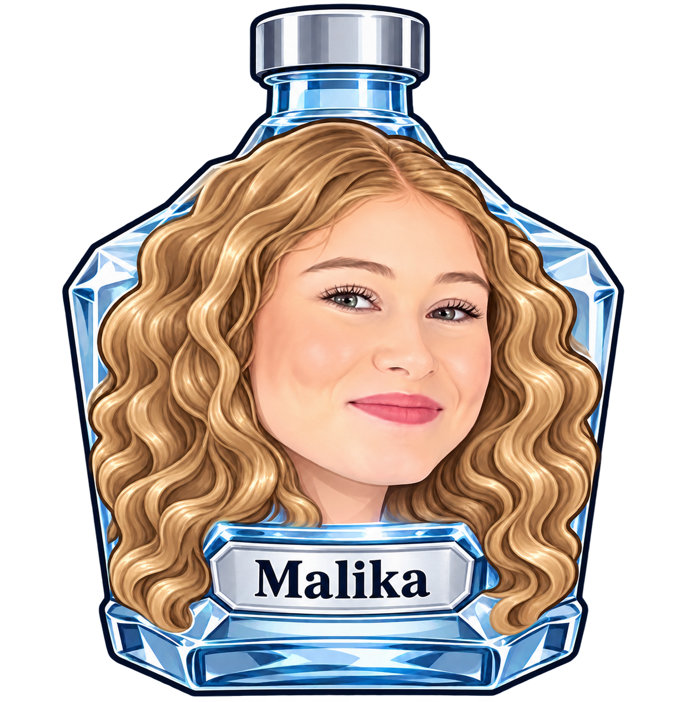
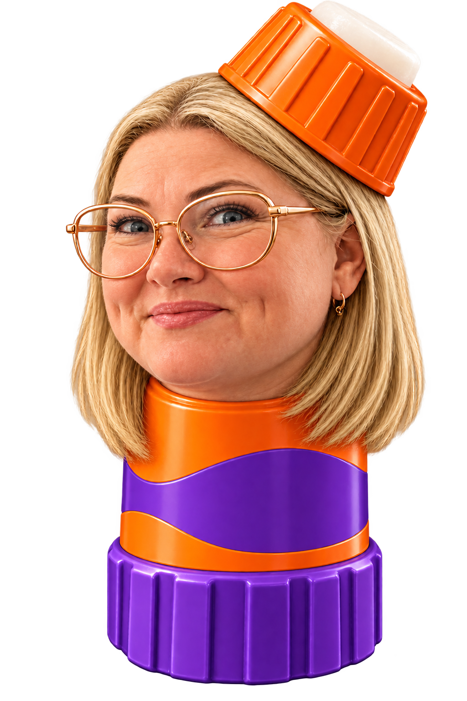
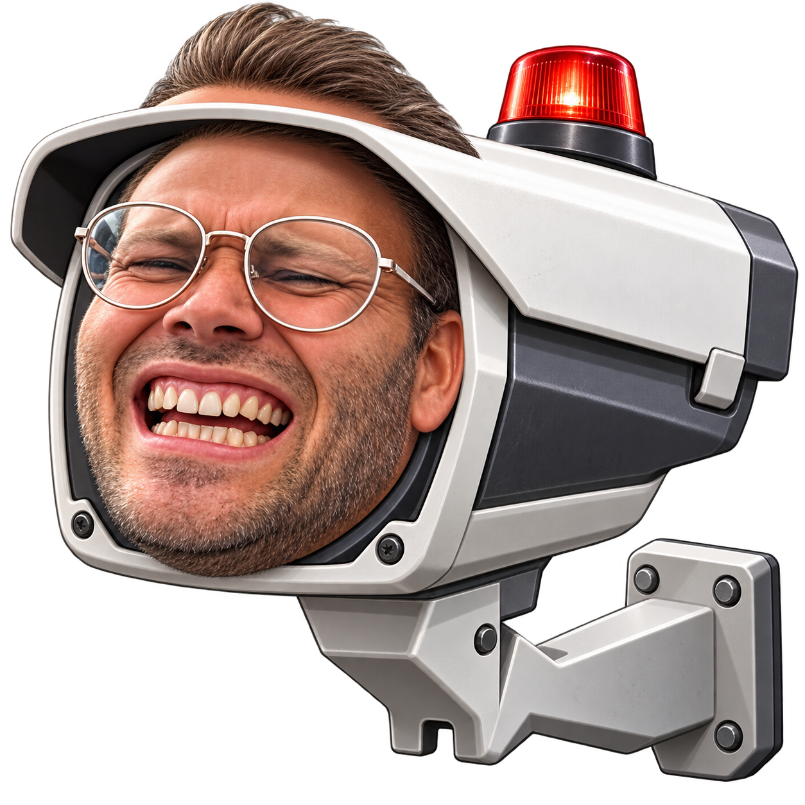
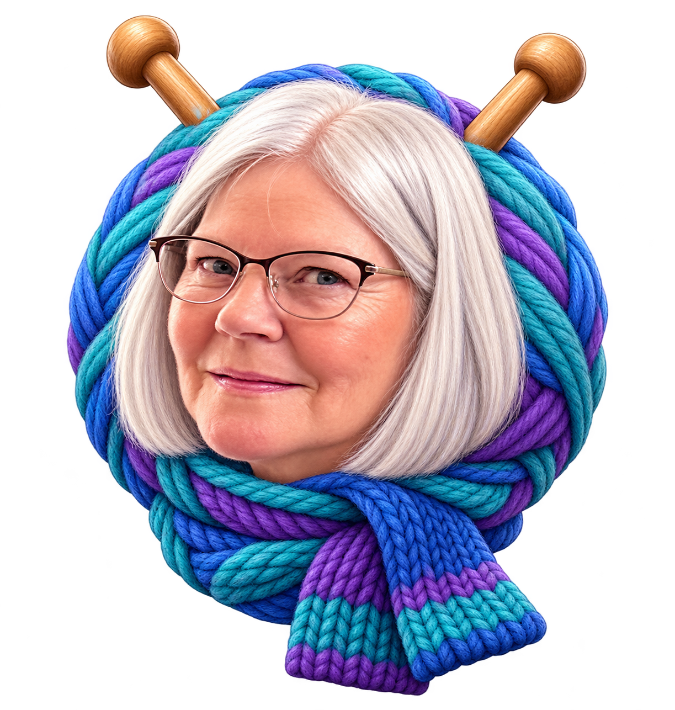
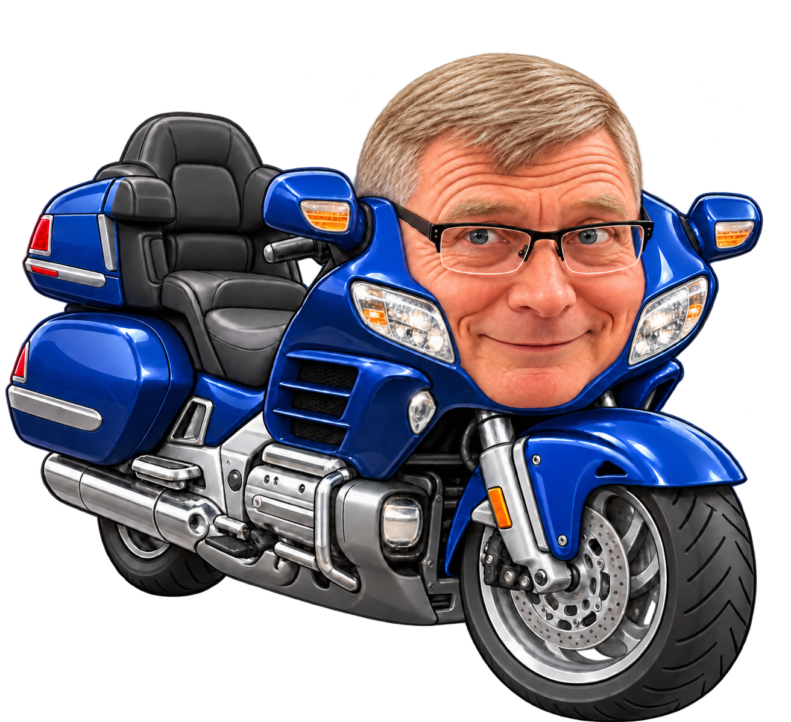
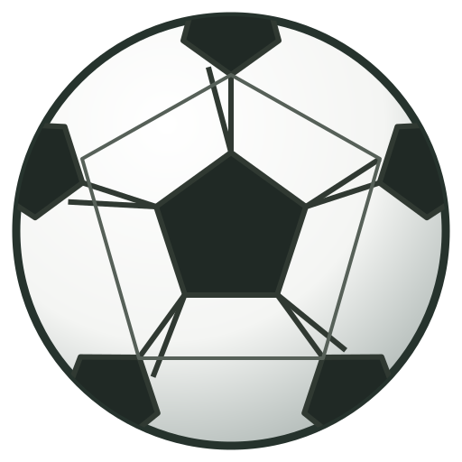

To ens bliver til næste figur.
Træk for at sigte. Slip for at droppe. To ens figurer bliver til den næste.
Ryst giver bunken et lille skub. Fjern: tryk på knappen og derefter en brik. Tryk igen for at annullere. Du starter med én af hver og får én ekstra af hver for hver 1.000 point.
Hold brikkerne under linjen. Fem sekunder over linjen afslutter runden.
På computer: piletaster og mellemrum. Pause låser mobilskærmen op igen.
Din igangværende runde afsluttes. Din rekord bliver gemt.